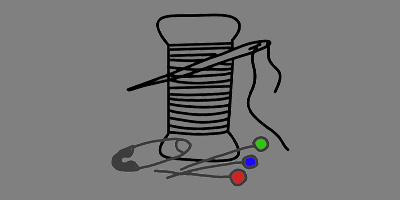

Nähtechniken
Hier kommen die wichtigsten Nähtechniken hin.
Immer daran denken: Die Brustmaße gehen gerade über den Rücken, unter beiden Achseln durch und nicht über die stärkste Stelle der Brust sondern über der Brust, wo ungefähr ein ÜberbrustKorsett enden würde. Man kann sich das in etwa wie eine diagonale Linie von Achsel zu Achsel vorstellen.
The Dressmaker. A complete book on all matters connected with sewing and dressmaking from the simplest stitches to cutting, making, altering, mending and caring for the clothes.
[englisch, Buch, print und digital]
Verlag: Leopold Class Library / Butterick Publishing Company
ISBN: ISBN: 978-1-527980-30-3
Beschreibung der historischen Techniken mit Bildern. Die verschiedenen Nähtechniken, Schneiden des Stoffes, erstellen des Kleidungsstückes,
anpassen der Kleidung und Schnittmuster, Stopfen von Löchern und die Pflege.
Alle Techniken mit Beschreibung und Fotos.